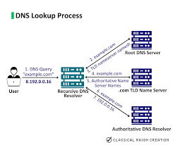

Domain Name System (DNS)

The Domain Name System is like the phonebook of the internet. It translates human-readable domain names like www.google.com into IP addresses that computers use to identify each other on a network. Without DNS, users would have to memorize numerical IP addresses to visit websites.